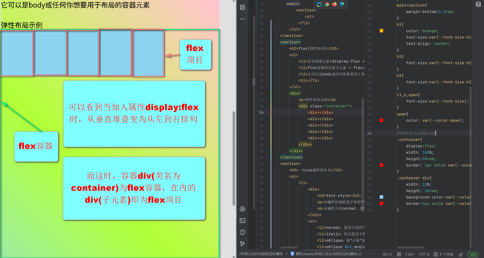
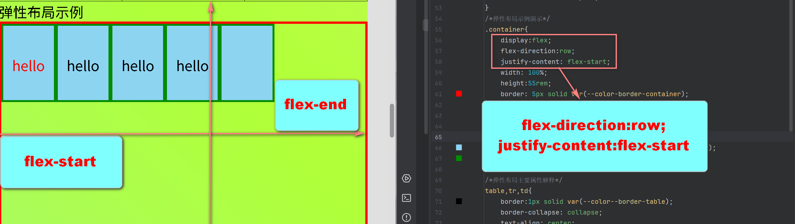
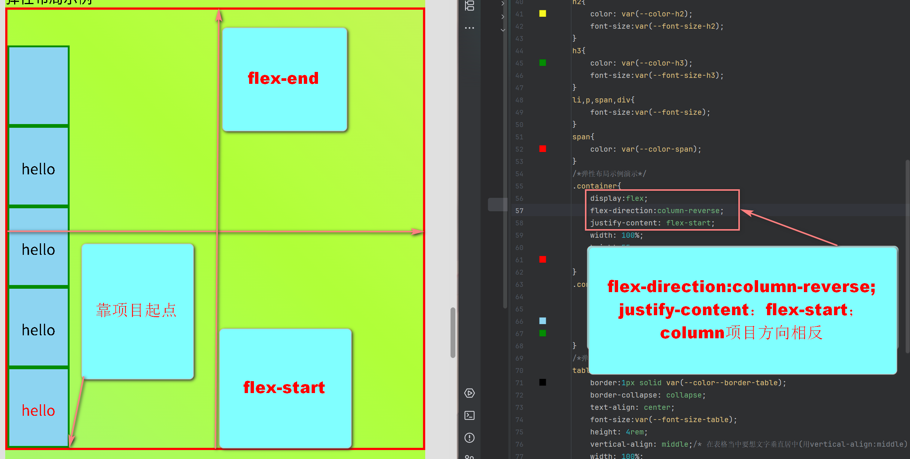
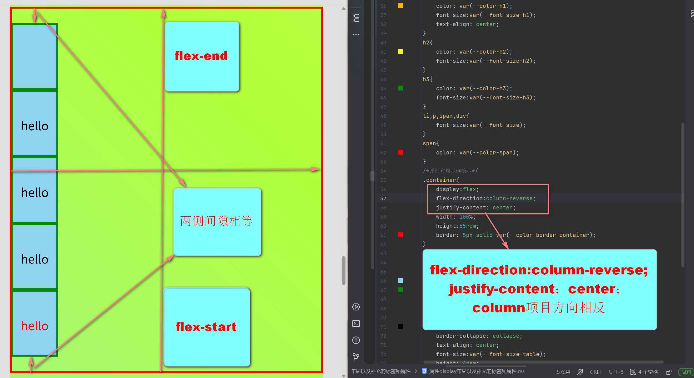
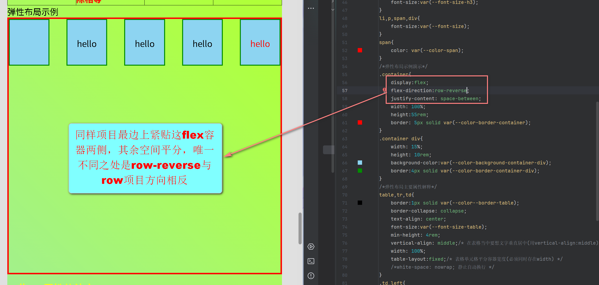
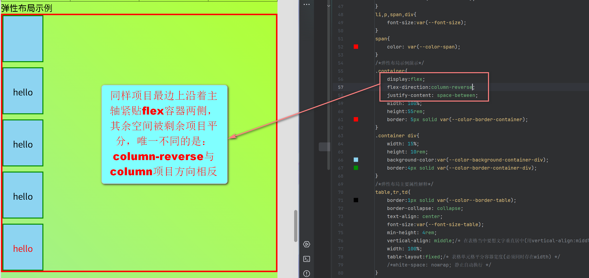
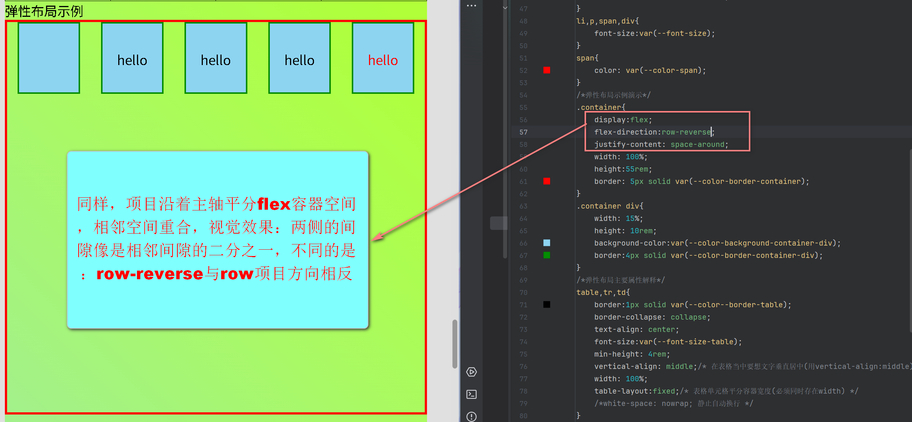
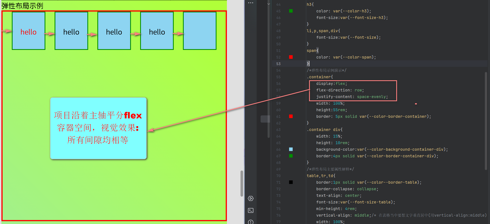
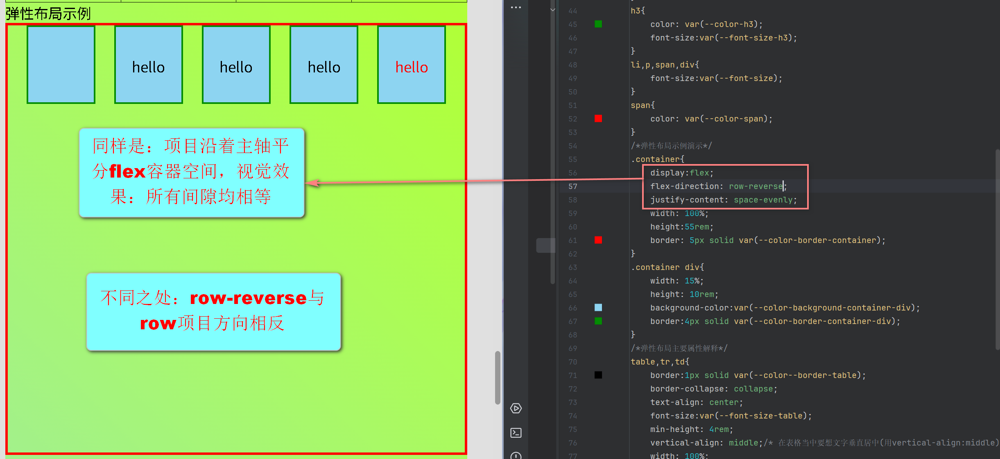
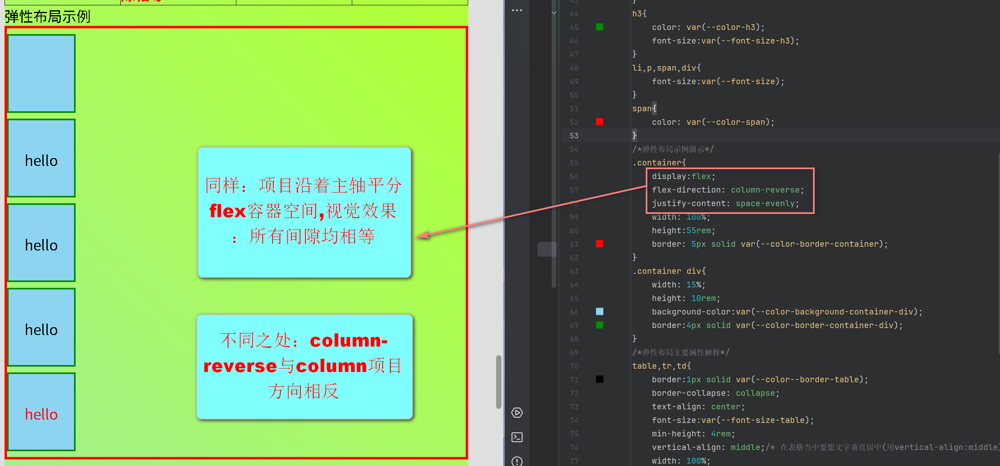

属性display布局以及补充的标签和属性
block(块级元素)
- 块级元素(div、section、p、nav、aside、main…………)默认在静态文档流中，都是垂直堆叠(从上到下排列)——也就是display:block
- 块级元素后续可以通过属性display更改(block[块级元素]、inline[内联元素]、flex[弹性布局]、grid[网格布局])
-
- 块级元素不常用的补充：
- address使用场景：作者/联系信息(默认状态为斜体)可以使用属性font-style:normal[改为不倾斜状态]
inline(内联元素)
- 内联元素(span、img、br、mark、i………………)默认在静态文档流中，都是在行框内水平排列，当行框宽度不足时，整个元素会移动到下一行继续水平排列——也就是display:inline
- 内联元素后续可以通过属性display更改
-
- 内联元素不常用的补充：
-
内联元素——初始状态为斜体(同样可以使用属性font-style:normal[改为不倾斜状态])
em使用场景：需要强调的词语(默认状态为斜体)
cite使用场景：书籍、电影、文章标题(默认状态为斜体)
dfn使用场景：首次定义术语时(默认状态为斜体)
var使用场景：数学公式、编程变量(默认状态为斜体)
-
flex(弹性布局)
- 任何容器元素+display:flex = flex容器
- flex容器的直接子元素 = flex项目
- 它可以是body或任何你想要用于布局的容器元素
-
flex最重要的概念(牢记)
- 定位flex项目的两条轴线(主轴和交叉轴)
flex-direction值 主轴方向与起点 交叉轴方向 justify-content(控制) align-items(控制) 视觉类比 row(默认) 水平，从左到右 垂直，从上到下 水平排列分布 垂直对齐 横排书架上放书 row-reverse 水品，从右到左 垂直，从上到下 水平排列分布 垂直对齐 横排书架上放书，但是从右开始放 column 垂直，从上到下 水平从左到右 垂直排列分布 水平对齐 竖排书架上放书 column-reverse 垂直，从下到上 水平从左到右 垂直排列分布 水平对齐 竖排书架上放书，但从底端开始放 



-
flex-direction
- 主要有：row(默认)、row-reverse、column、column-reverse四个值
- 主要控制的是主轴方向(即所有flex项目会沿着主轴进行排列)
-
justify-content
该属性永远以主轴为核心
- 主要有：flex-start项目对齐到主轴的起点
-
值 作用 注意事项 图例 flex-start 把flex项目对齐到主轴的起点 会受到flex-direction影响
当值为row时：主轴的起点是最左边
当值为row-reverse时，主轴的起点是最右边
当值为column时，主轴的起点是最上面
当值为column-reverse时，主轴的起点是最下面
")
")

flex-end 把flex项目对齐到主轴的终点 会受到flex-direction影响
当值为row时：主轴的起点是最右边
当值为row-reverse时，主轴的起点是最左边
当值为column时，主轴的起点是最下面
当值为column-reverse时，主轴的起点是最上面")
")
")
")
center 把flex项目在主轴上居中 会受到flex-direction影响
当值为row、row-reverse时：水平居中，但是项目方向会受两值的变化，不影响居中的效果。
当值为column、column-reverse时，垂直居中，但是项目方向会受两值的变化，不影响居中的效果。")
")
")

space-between 沿着主轴方向最边上的项目(即最左边项目，和最右边项目)，紧贴flex容器两侧，其余空间由剩下的项目平分
处理步骤：第一个项目贴在主轴起点，最后一个项目贴在主轴终点，剩余空间被项，项目之间的间隙平分会受到flex-direction影响
当值为row、row-reverse时，项目方向会受两值的变化。
当值为column、column-reverse时，项目方向会受两值的变化。")

")

space-around 沿着主轴方向最边上的项目(即最左边项目，和最右边项目)，离flex容器两侧有一定距离，其余空间由剩下的项目平分
处理步骤，将容器主轴空间等分给每个项目及其两侧的间隙，每个项目获得相同大小的周围空间，相邻项目的间隙会叠加，视觉效果：相邻项目的间隙是两侧的两倍会受到flex-direction影响
当值为row、row-reverse时，项目方向会受两值的变化。
当值为column、column-reverse时，项目方向会受两值的变化。")

")
")
space-evenly 将flex容器所有的空间，给项目平分(包括两侧)
处理步骤，将flex容器空间等分给所有间隙，间隙数量=项目数量+1,所有间隙大小相等(包括容器边缘)，视觉效果：所有间隙相等会受到flex-direction影响
当值为row、row-reverse时，项目方向会受两值的变化。
当值为column、column-reverse时，项目方向会受两值的变化。

")

- 定位flex项目的两条轴线(主轴和交叉轴)
弹性布局示例
hello
hello
hello
hello
一些css属性的补充
-
font-style
该属性控制的是字体的"样式变体"(蒸屉、斜体)或"几何变形"(斜体)
该属性共有normal、italic、oblique、oblique(angle)四个值[以下的名词"字体"可以理解为文本的字体类型(font-family)【微软雅黑、宋体…………】]：
- normal：使用字体的"正体"版本(可以理解为非斜体)
- italic：优先使用字体的"斜体"变体(如果存在)
- oblique：将"正体"版本机械地倾斜一个角度
- oblique <angle>：将"正体"版本精确地倾斜指定角度(angle[单位deg（角度）])
-
vertical-align
该属性控制的是调整行内元素在其所属的[行框(line box)]内的垂直位置
该属性共有：基线对齐(baseline[默认值]、sub、super)、相对行框对齐(text-top、text-bottom)、相对行框对齐(top、middle、bottom)、数值\百分比(长度值[px、rem……]、百分比值)
值 作用 适用场景 示例/说明 基线对齐 baseline(默认值) 元素的基线与父元素的基线对齐 文本对齐 同一行中不同字号的文字按基线对齐，看起来很整齐 sub 将元素对齐父元素的下标基线 数学/化学公式 H2O中的"2" super 将元素对齐到父元素的上标基线 数学/幂运算 X2中的"2" 相对行框对齐 text-top 元素的顶部与父元素字体的顶部对齐 图标与文字顶部对齐 让图标与这行文字的最高点对齐 text-bottom 元素的底部与父元素字体的底部对齐 图标与文字底部对齐 让图标与这行文字的顶最低点对齐 相对行框对齐 top 元素及其后代的顶部与整行的顶部对齐 多行元素顶部对齐 同一行内多个元素顶部对齐 middle 元素的中部与父元素基线+x-height/2对齐
在表格单元格中；内容在单元格内垂直居中最常用的垂直居中 表格单元格垂直居中，图标与文字垂直居中 bottom 元素及其后代的底部与整行的底部对齐 多行元素底部对齐 同一行内多个元素底部对齐 数值/百分比 长度值(如px、rem…………) 将元素从基线位置抬高(正值)或降低(负值) 微调图标位置 vertical-align:-3px;让图标下移3像素 百分比值(如：50%) 相对于元素自身的line-height计算偏移量 基于行高的精准控制 vertical-align:50%;上移自身行高的一半